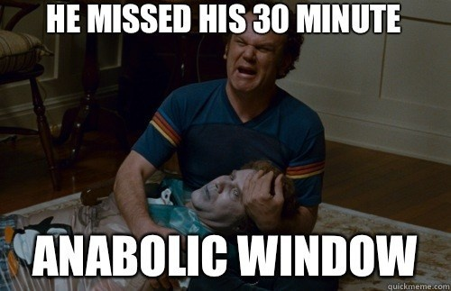

Debunking all myths related to fitness.
Since ages, broscience has been lingering on to the gym walls imparting false information to the people especially the beginners. If you are a gym-goer you would have definitely come across gym bros sharing their cup of wisdom with you and you choose to believe all their imparted knowledge and make them your 'guru', just because these guys are huge and bulky doesn't necessarily mean that they have accurate knowledge regarding what they are saying, they might have just gotten lucky or might have extremely good genetics.
I am not saying that's the case with every person, some of them have genuine knowledge regarding the process but half of the time its just broscience.
Wait but what is broscience?? According to the dictionary, broscience is not even a word it's just a slang used for misinformation circulated among men, usually bodybuilding claims not backed by science.
So how are you going to differentiate between actual gym knowledge and broscience? Let's list some of the most well-known myths that are prevalent in the fitness industry all over the world.
' If you are not sore after a workout, you didn't exercise hard enough'
'The more protein you eat, the more muscle you will gain'.
.'If you don't wear a supporter, your balls are gonna smash'.
'I am gonna build a six-pack just by doing a million crunches'.
'The anabolic window'.
'I don't need to train the abs when I am on a weight gain diet'
' You should be training every day a week to gain muscle'
'I don't require protein if I don't work out'
You might be wondering why your muscles are not sore even though you are beating yourself to death every day in the gym and thinking that you might be not working hard enough. Well, that's not the case every time, if you put in your diet and rest right, your muscles would have recovered from the intense workout and ready to push weights again.
Delayed-onset muscle soreness(DOMS) is a term that refers to tightness and soreness in muscles after a heavy workout due to the small cracks in muscle fibers that results in inflamed and sored muscles. If you are consuming a diet rich in macros and resting your muscles properly they might recover in no time without even feeling sore.
Of course, it has been scientifically proven that high protein diets result in increased muscle mass but exactly what amount of protein qualifies to a high protein diet. According to the DRI(Dietary Reference Intake), you need about 1-1.8 g 0f protein per kg of your bodyweight.
Often people suffer from problems due to excess protein intake rather than protein deficiency, there is an upper threshold to how much protein you should be taking and going overboard can result in digestion and kidney problems. Muscles are 25% protein and 75% water and if you are taking excess protein you are just flushing money down the drain.
It's a common myth typically around the Indian subcontinent that if you are not gonna wear a supporter you might end up hurting your testicles and live impotent for the rest of your life. While in fact, the real reason for wearing a supporter is to tighten your lower abdominal muscles to prevent hernia.
It is always noted that lifting heavy weights is the main cause for hernia all over the world, while you can prevent it by tightening your abdominals but some people just tend to have a weak abdominal lining resulting in recurring hernia problems. A supporter provides extra protection to those muscles by tightening them.
A six-pack is the most desirable muscle group among most men but most of them do not know how to build one, they rely on abdominal exercises like crunches and situps to build a six-pack but the real trick is to shed that excess body fat that is covering your beautiful abs and in order to shed body fat you need a diet that is a calorie deficit.
A six-pack is not gonna reveal itself unless you shed that layer of fat. I have seen many individuals in the gym doing a million sets of crunches wishing they would get a well-defined pack of abdominals, well it doesn't work that way.
It is generally considered that you should take protein anywhere from 15 - 30 min after or during a workout if you want the workout to produce optimal results, this is what the bros call the anabolic window. It doesn't totally hold when it is visited by science itself. While it is equally important to take healthy nutrients after a workout to aid in muscle recovery and growth but the existence of an anabolic window still lingers in question and if such a window does exist it might differ from person to person based on several factors such as metabolism, protein absorption, rest, appropriate nutrients and so on.
So don't rush home after the workout just to beat that anabolic window but do practice a healthy dieting regime after a workout to maximize gains.

Some people don't train the abdominal section where they are on a caloric surplus because they think that the abs are not even gonna be seen so why waste their time by training them. You see the abdominals cover the major part of the core of your body, even though you are on a caloric surplus you are gonna be doing other heavy-weight exercises like squats and the deadlift and for you to lift such heavy-weight you are gonna need a strong core. By training abs you are strengthing your core and the inner lining of your stomach which helps in the prevention of hernia when you are lifting heavy-weights.
When it comes to muscle gain the majority of people think that the more we train the more we make progress but it is not entirely true, your body needs rest as much as it needs the work and overtraining is a real thing for sure. Overtraining can cause problems like reduce performance levels, stress, anxiety, muscle, and joint pain. So don't force your body to go overboard with the training process, slack off from time to time, take it slow and progress over time periodically.
I have seen so many of my non-exercising friends criticizing me about my protein shakes and bars and flaunting about their no protein needs because they don't work out. I have said this many times and will stress the point even more that protein is an essential macronutrient that is required for the proper and healthy functioning of the body, it doesn't matter if you workout or not maintaining those protein levels if the best way to maintain overall health and wellness.